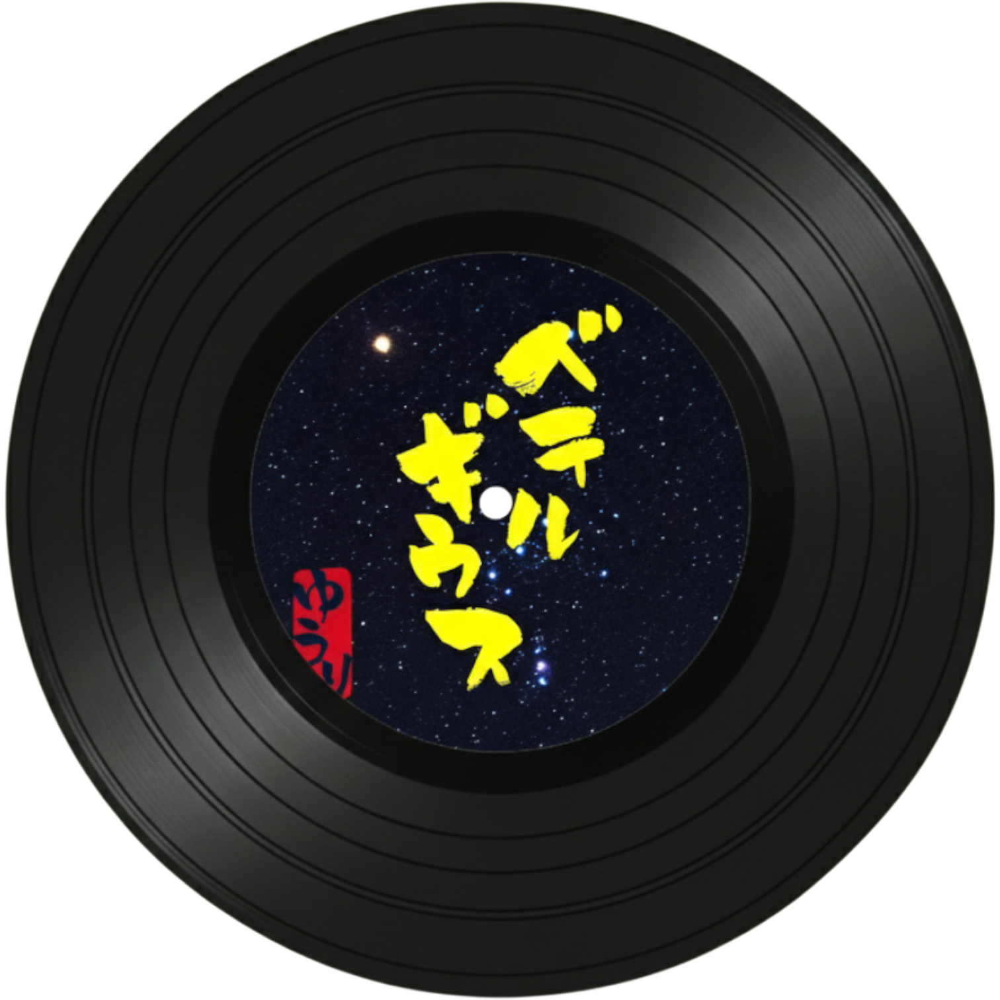
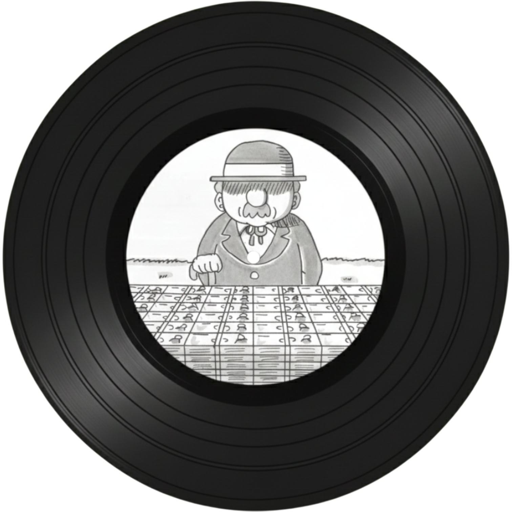
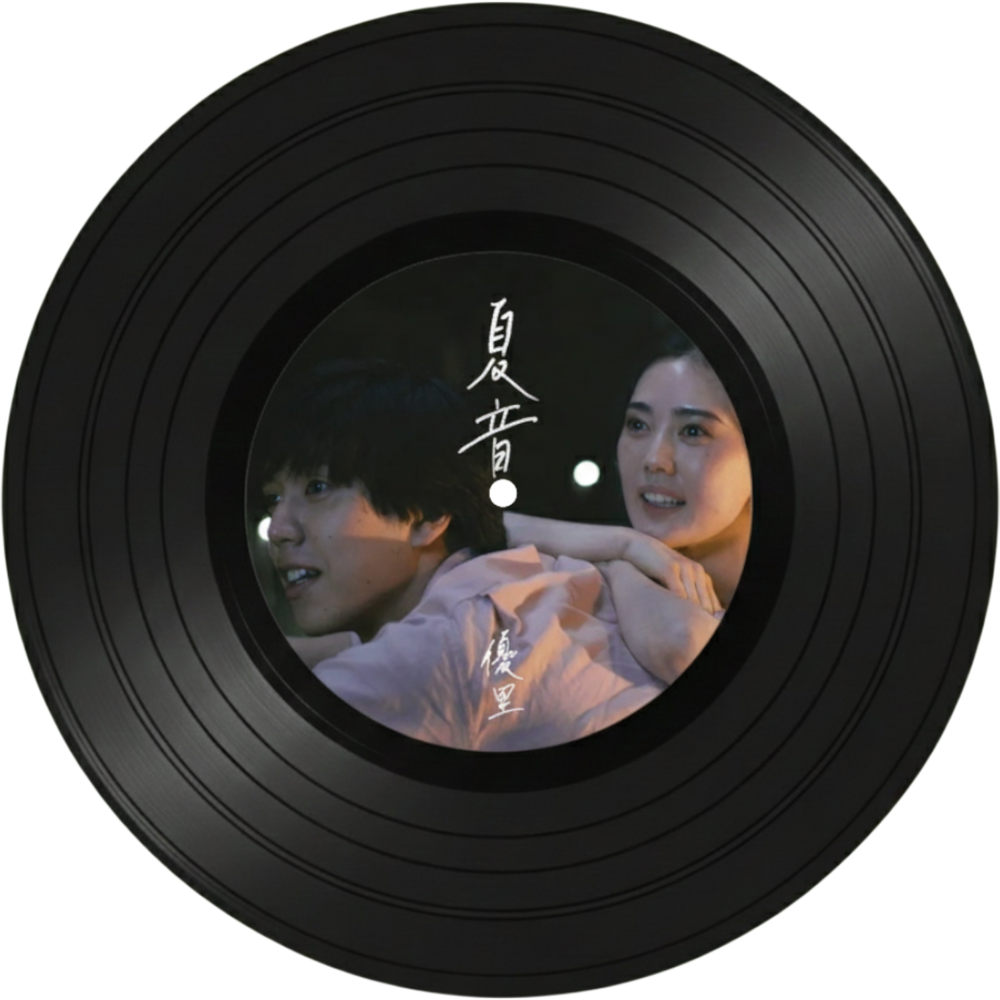

Yuuri(키무라 유우리)

출생: 1994년 3월 23일
데뷔: 2019년 12월 1일 - 숨바꼭질(かくれんぼ)
레이블: Ariola Japan
특징:
- 이별 노래 장인. 전 여친을 못 잊는 가사가 많음
- 2016년 록밴드 THE BUGZY의 보컬로 활동하다가 2019년 5월 해산 이후 솔로 데뷔하여 큰 성과를 거둠

Betelgeuse
한국에서 유우리를 가장 유명하게 만든 곡이다. 숏폼에서 한 번쯤 들어봤을 것이다. 별자리와 사람의 인연을 엮은 가사가 정말 예쁘다. 노래방 국룰 곡이다.

Billimillion
"남은 수명을 100억 원에 팔래?"라고 물으면 안 판다고 하겠지? 그만큼 너의 삶은 100억보다 가치 있다는 내용의 노래다. 자존감 낮아졌을 때 들으면 '아, 나 꽤
소중한 사람이구나' 싶어서 눈물 나게 위로가 된다.

Natsune
'드라이 플라워'의 감성을 좋아한다면 무조건 들어야 할 곡이다. 제목이 '여름 소리'라는 뜻인데, 여름밤의 습한 공기와 짝사랑의 애틋함이 그대로 느껴진다. 불꽃놀이 보면서
들으면 감성 200% 충전 완료이다.

Peter Pan
슬픈 발라드만 있는 게 아니다! 이건 아침에 듣기 좋은 엄청 신나는 응원가다. '어른이 되지 않아도 괜찮아, 네 마음대로 살아'라고 등을 밀어주는 느낌이라 용기가 솟아난다.